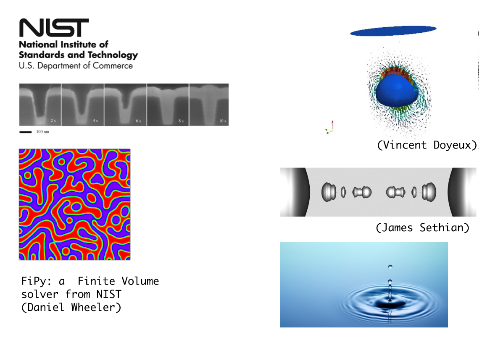

scikit-fmm
Jason Furtney
@jkfurtney
Knowing your boundaries
…and bootstrapping a SciPy-related community project
Inspired by a lightning talk by Gael Varoquaux
Bootstrapping a SciPy-related community project
Stationary solutions to the Eikonal equation
\(F(x) |\nabla T(x)| = 1\)
Implicit surface representation
Represent a surface as the zero contour of a function in one dimensions higher.

(wikipedia)
(from Sethian, 2006)
Fast Marching Method
- The fast marching method (fmm) is an O(N Log(N)) algorithm for solving boundary value problems of the Eikonal equation.
- Created in the 1990s at MIT by James Sethian and Stanley Osher.
scikit-fmmis a Python/NumPy extension module which implements the fast marching method.
(from Sethian, 2006)
(from Sethian, 2006)
- Continuous analogy of Dijkstra's algorithm.
- https://en.wikipedia.org/wiki/Dijkstra's_algorithm
>>> from skfmm import distance >>> distance([1, -1])
array([ 0.5, -0.5])
numpyarrays are used as input and output.- The input array can be of 1, 2, 3 or higher dimensions and can be masked.
>>> distance([[ 1, 1, 1, 1, 1],
[ 1, 1, -1, 1, 1],
[ 1, -1, -1, -1, 1],
[ 1, 1, -1, 1, 1],
[ 1, 1, 1, 1, 1]])
array([[ 1.79, 1.11, 0.50, 1.11, 1.79],
[ 1.11, 0.35, -0.35, 0.35, 1.11],
[ 0.50, -0.35, -1.11, -0.35, 0.50],
[ 1.11, 0.35, -0.35, 0.35, 1.11],
[ 1.79, 1.11, 0.50, 1.11, 1.79]])
Applications
https://math.berkeley.edu/~sethian/2006/Applications/Medical_Imaging/artery.html
- Path finding
- Solving mazes
- Anthropology
https://math.berkeley.edu/~sethian/2006/Applications/Robotics/robotics.html
Level Set method
FMM is the foundation of the Level-Set method.
Modeling moving boundaries in physical problems.

Community driven
Bootstrapping a SciPy-related community project
- Released in February 2012
- 9 contributors
- 7 versions
- 92 commits
- 1,744 lines of code (364 Python, 1,380 C++)
- 731 lines of tests
- 1 Stack Overflow question/answer
Things that worked well for me
- Github organization, not a personal github page
- Register on PyPI https://pypi.python.org/pypi/scikit-fmm
- Try to refrain from personal ownership of the project
- Start simple. I started with one function
- Minimal, well-documented, application-agnostic library
- Quickly address issues and release updates often.
- Mailing list, Github issues and pull requests.
- BSD style license. Similar to the PSF license.
- Thank people and add them to a CONTRIBUTORS.txt file
Jason Furtney Chris Richardson Luigi Costalli Daniel Wheeler Jan Margeta Geordie McBain Eugene Prilepin J A Kirkham
Things I should do better
- Binary packaging
- More application specific examples
- Build bot, Travis CI
- Announce updates on the scipy-dev mailing list
- Technical:
- Second order initialization (n-dimensional cubic interpolation and solving systems of polynomials.)
- Solutions in triangular grids and manifold surfaces.
Thank you